Introduction to economic evaluations
CEA Fundamentals: Valuing Costs
Learning Objectives and Outline
00
Learning Objectives
Identify theoretical and methodological differences between different economic evaluation techniques
Grasp the foundations of cost-effectiveness analysis
Describe the steps of valuing costs in economic evaluations & identify ways to curate cost parameters
Outline
01
02
CEAs: Identifying Alternatives
03
Valuing Costs
04
Data Collection
Introduction to Economic Evaluations
01
So far…
We’ve touched on the basic framework for decision analysis, focusing on:
Decision trees & probabilities
Bayes theorem & probability revision
Constructing decision trees using Amua
Now…
We will start to touch on some of the core concepts for representing costs and health benefits within decision problems.
Economic Evaluation
Relevant when decision alternatives have different costs and health consequences.
We want to measure the relative value of one strategy in comparison to others.
This can help us make resource allocation decisions in the face of constraints (e.g., budget).
Balancing $$ and Health Outcomes
Features of Economic Evaluation
- Systematic quantification of costs and consequences.
- Comparative analysis of alternative courses of action.
Techniques for Economic Evaluation
| Type of study | Measurement/valuation of costs | Identification of consequences | Measurement / valuation of consequences |
|---|---|---|---|
| Cost analysis | Monetary units | None | None |
Source: [@drummond2015a]
Cost analysis
Only looks at healthcare costs
Relevant when alternative options are equally effective (provide equal benefits). Rarely the case in reality!
Costs are valued in monetary terms (e.g., U.S. dollars)
Decision criterion: often to minimize cost
Techniques for Economic Evaluation
| Type of study | Measurement/Valuation of costs | Identification of consequences | Measurement / valuation of consequences |
|---|---|---|---|
| Cost analysis | Monetary units | None | None |
| Cost-effectiveness analysis | Monetary units | Single effect of interest, common to both alternatives, but achieved to different degrees. | Natural units (e.g., life-years gained, disability days saved, points of blood pressure reduction, etc.) |
Source: [@drummond2015a]
Cost-Effectiveness Analysis (CEA)
Most useful when decision makers consider multiple options within a budget, and the relevant outcome is common across strategies
Costs
Costs are valued in monetary terms ($)
Benefits
Benefits are valued in terms of clinical outcomes (e.g., cases prevented, lives saved, years of life gained)
Results
Results reported as a cost-effectiveness ratio
Cost-Effectiveness Analysis Example
Life Extension Example
Suppose we are interested in the prolongation of life after an intervention:
- Outcome of interest: life-years gained
- The outcome is common to alternative strategies; they differ only in the magnitude of life-years gained
- Results reported as: $/Life-years gained
Techniques for Economic Evaluation
| Type of study | Measurement/Valuation of costs both alternative | Identification of consequences | Measurement / valuation of consequences |
|---|---|---|---|
| Cost analysis | Monetary units | None | None |
| Cost-effectiveness analysis | Monetary units | Single effect of interest, common to both alternatives, but achieved to different degrees. | Natural units (e.g., life-years gained, disability days saved, points of blood pressure reduction, etc.) |
| Cost-utility analysis | Monetary units | Single or multiple effects, not necessarily common to both alternatives. | Healthy years (typically measured as quality-adjusted life-years) |
Source: [@drummond2015a]
Cost-Utility Analysis
- Essentially a variant of cost-effectiveness analysis.
- Major feature: use of summary measure of health: QALY.
- Quality-Adjusted Life Year (QALY): A metric that reflects both changes in life expectancy and quality of life (pain, function, or both).
- By far the most widely published form of economic evaluation.
Techniques for Economic Evaluation
| Type of study | Measurement/Valuation of costs both alternative | Identification of consequences | Measurement / valuation of consequences |
|---|---|---|---|
| Cost analysis | Monetary units | None | None |
| Cost-effectiveness analysis | Monetary units | Single effect of interest, common to both alternatives, but achieved to different degrees. | Natural units (e.g., life-years gained, disability days saved, points of blood pressure reduction, etc.) |
| Cost-utility analysis | Monetary units | Single or multiple effects, not necessarily common to both alternatives. | Healthy years (typically measured as quality-adjusted life-years) |
| Cost-benefit analysis | Monetary units | Single or multiple effects, not necessarily common to both alternatives | Monetary units |
Cost-Benefit Analysis
- Also known as Benefit-Cost Analysis
- Relevant for resource allocation between health care and other areas (e.g., education)
- Costs and health consequences are valued in monetary terms (e.g., U.S. dollars)
- Valuation of health consequences in monetary terms ($) is obtained by estimating individuals willingness to pay for life saving or health improving interventions. (e.g. US estimate of value per statistical life ~$9 million)
- Cost-benefit criterion: the benefits of a program > its costs
Notice that we’re not making comparisons across strategies–only comparisons of costs and benefits for the same strategy
To read more: Robinson et al, 2019
Cost-Benefit Analysis
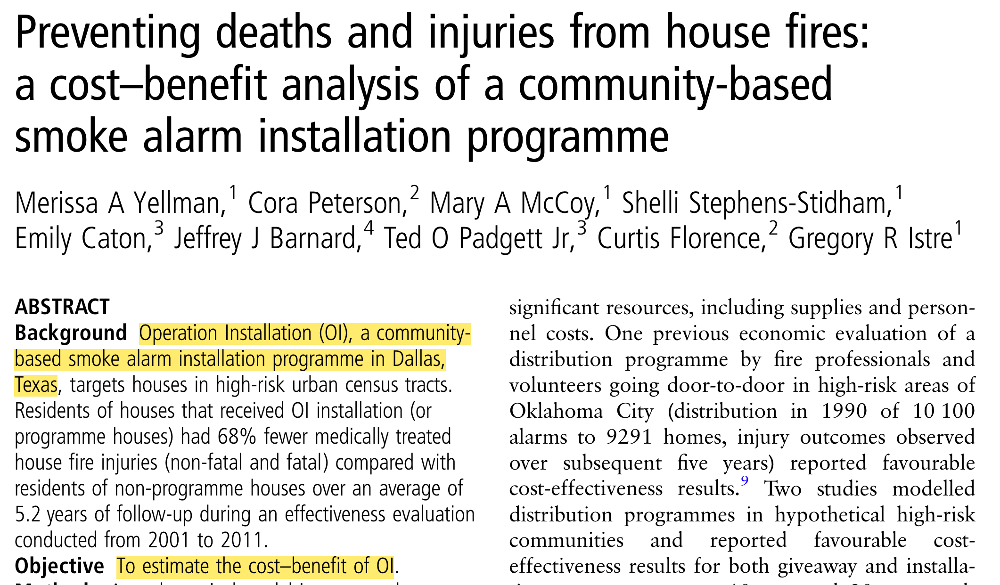
https://pubmed.ncbi.nlm.nih.gov/28183740/
Cost-Benefit Analysis
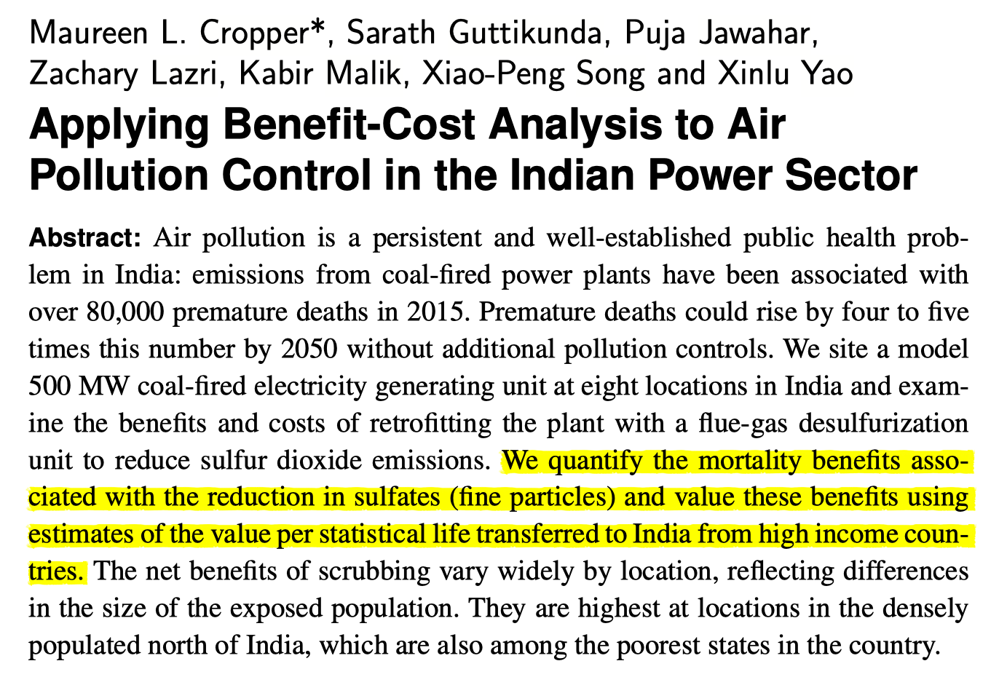
https://www.cambridge.org/core/product/identifier/S2194588818000271/type/journal_article
Back to Cost-Effectiveness Analysis!
Cost-Effectiveness Analysis Formula
The CEA Formula
Relevant when healthcare alternatives have different costs & health consequences
\frac{\text{Cost (Intervention A) - Cost (Intervention B)}}{\text{Benefit (A) - Benefit (B)}}
Relative VALUE of an intervention in comparison to its alternative is expressed as a cost-effectiveness RATIO
Who uses economic evaluations?
Health Technology Advisory Committees
NICE (The National Institute for Health and Care Excellence, UK)
Canada’s Drug and Health Technology Agency
PBAC (Pharmaceutical Benefits Advisory Committee in Australia)
Brazil’s health technology assessment institute
Groups developing clinical guidelines
WHO
CDC
Disease-specific organizations: American Cancer Society; American Heart Association; European Stroke Organisation
Regulatory agencies
FDA (U.S. Food and Drug Administration)
EPA (U.S. Environmental Protection Agency)
CEAs: Identifying Alternatives
02
Identifying Alternatives
Decision modeling / economic evaluation requires identifying strategies or alternative courses of action.
Alternatives Include:
Different therapies
Different policies
Different technologies
Different combinations
Different sequences of events
Different treatment ages
Once we have identified the alternatives, we’ll want to quantify their associated consequences in terms of:
- Health outcomes
- Costs
CEA components
\frac{\text{Cost (Intervention A) - Cost (Intervention B)}}{\text{Benefit (A) - Benefit (B)}}
Valuing Costs
03
Valuing Costs: Steps
1
Identify
Estimate the different categories of resources likely to be required
(e.g., surgical staff, medical equipment, surgical complications, re-admissions)
2
Measure
Estimate how much of each resource category is required
(e.g. type of staff performing the surgery and time involved, post-surgery length of stay, re-admission rates)
3
Value
Apply unit costs to each resource category
(e.g., salary scales from the relevant hospital or national wage rates for staff inputs, cost per inpatient day for the post-surgery hospital stay)
Source: Gold 1996, Drummond 2015, Gray 2012)
We can identify different types of healthcare costs
Direct Health Care Costs
- Hospital, office, home, facilities
- Medications, procedures, tests, professional fees
Direct Non-Health Care Costs
- Childcare, transportation costs
Time Costs
- Patient time receiving care, opportunity cost of time
Productivity Costs
- Impaired ability to work due to morbidity
- Lost economic productivity due to death
Unrelated Healthcare Costs
- Cumulative trajectory of total healthcare costs over time (unrelated to medical interventions)
Identifying Costs in Practice
- Count what is likely to matter
- Exclude what is likely to have little effect or equal effects across alternatives
- Any exclusion must be noted & possible bias examined
- We are constrained by what data are available
We can measure costs using different approaches
Micro-costing
(bottom-up)
- Measure all resources used by individual patients, then assign the unit cost for each type of resource consumed to calculate the total cost
Gross-costing
(top-down)
- Estimate cost for a given volume of patients by dividing the total cost by the volume of service use
- Example: Downstream costs (e.g., hospitalization due to opioid overdose)
Ingredients-based approach
(P x Q x C)
- Probability of occurrence (P)
- Quantity (Q)
- Unit costs (C)
Whose perspective?
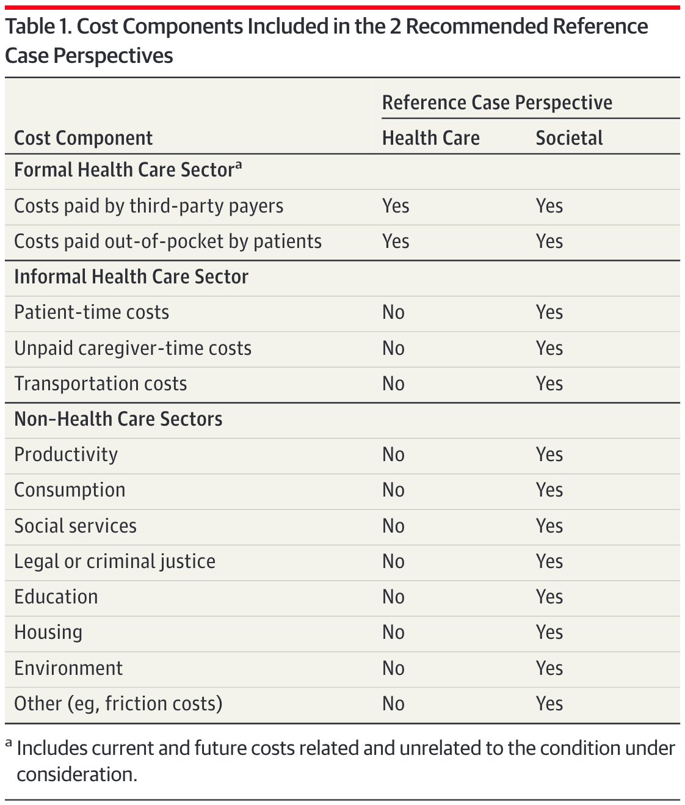
Sanders GD, Neumann PJ, Basu A, et al. Recommendations for Conduct, Methodological Practices, and Reporting of Cost-effectiveness Analyses: Second Panel on Cost-Effectiveness in Health and Medicine. JAMA. 2016;316:1093–1103.
Whose perspective?
PERSPECTIVE MATTERS
Formal Healthcare Sector: Medical costs borne by third-partypayers & paid for out-of-pocket by patients. Should include current + future costs, related & unrelated to the condition under consideration
Societal perspective: Represents the wider “public interest” & inter-sectoral distribution of resources that are important to consider - reflects costs on all affected parties
Perspective Example: Mammography
Formal Healthcare Sector:
- Costs associated with the screening itself [mammogram procedure + physician time]
- Costs of follow-up tests for both false-positive & true positive results
- Downstream costs (or savings) associated with cases of breast cancer, such as: Hospitalization + treatment costs
- Costs unrelated to medical intervention/disease; of living longer due to mammography
Societal perspective:
- Costs associated with the screening itself [mammogram procedure + physician time]
- Costs of follow-up tests for both false-positive & true positive results
- Downstream costs (or savings) associated with cases of breast cancer, such as: Hospitalization + treatment costs
- Costs unrelated to medical intervention/disease; of living longer due to mammography
- Patient productivity losses associated with the screening or cancer treatment
- Childcare/transportation costs
Data Collection
04
Two Approaches for Data Collection
Approach 1
Alongside clinical trials
Collect cost data directly during the trial
Approach 2
Using secondary data
Leverage existing databases, registries, and published literature
International versus US will have different approaches
Costs (International)
1
Local Data
In-country registries, hospital data, donor databases
2
Literature
Published cost studies
3
Tufts CEA Registry
Comprehensive database
4
DCP3
Disease Control Priorities
The key is to get as close to the “true” cost associated with each procedure per patient
E.g., “TB healthcare & diagnostics are from official price list of the National Health Laboratory Service in South Africa; Costs for follow-up reflect local clinic and culture-based screening for active-tuberculosis”
Costs (Published Literature)
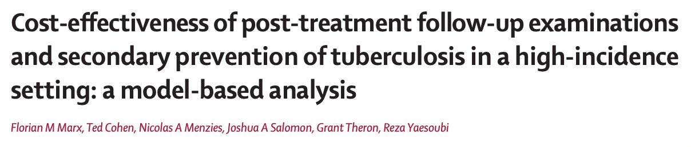
Costs (Published Literature)
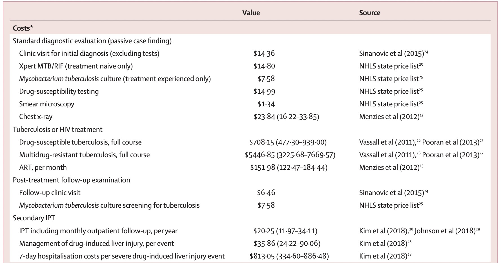
Costs (Tufts CEVR)
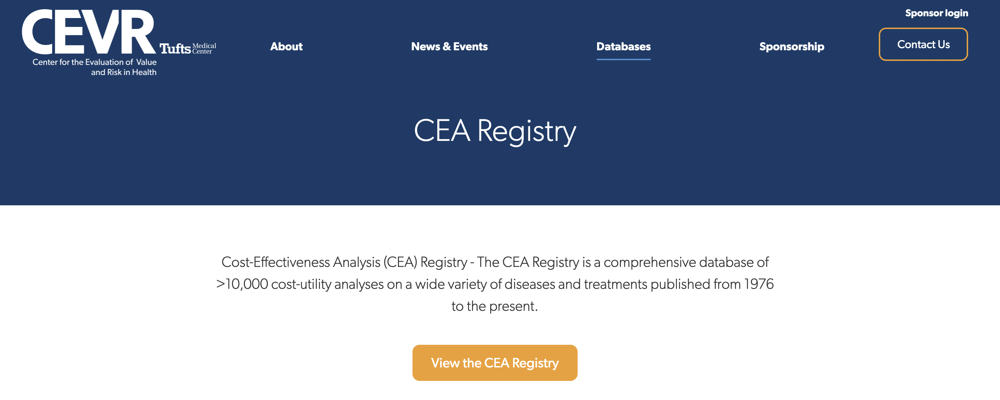
https://cevr.tuftsmedicalcenter.org/databases/cea-registry
Costs (Tufts CEVR)
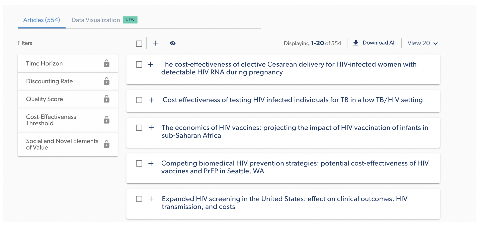
Costs (Tufts CEVR)
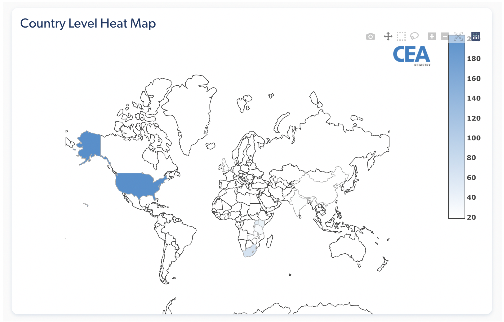
Costs (Tufts CEVR)
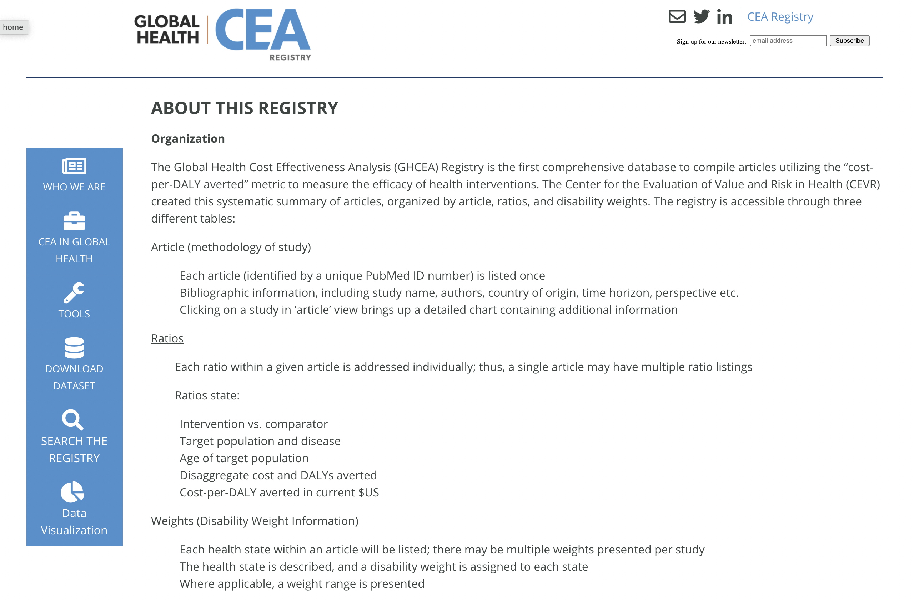
http://ghcearegistry.org/ghcearegistry/
Costs (Tufts CEVR)
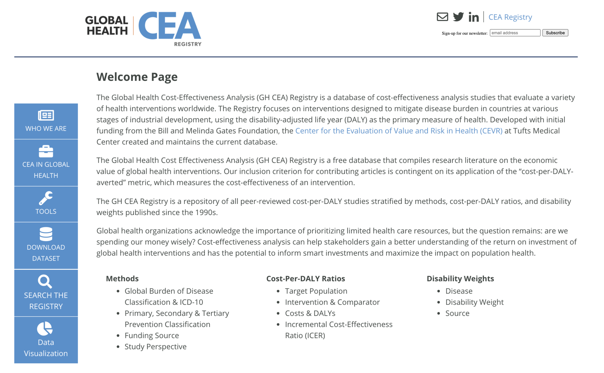
Costs (DCP3)
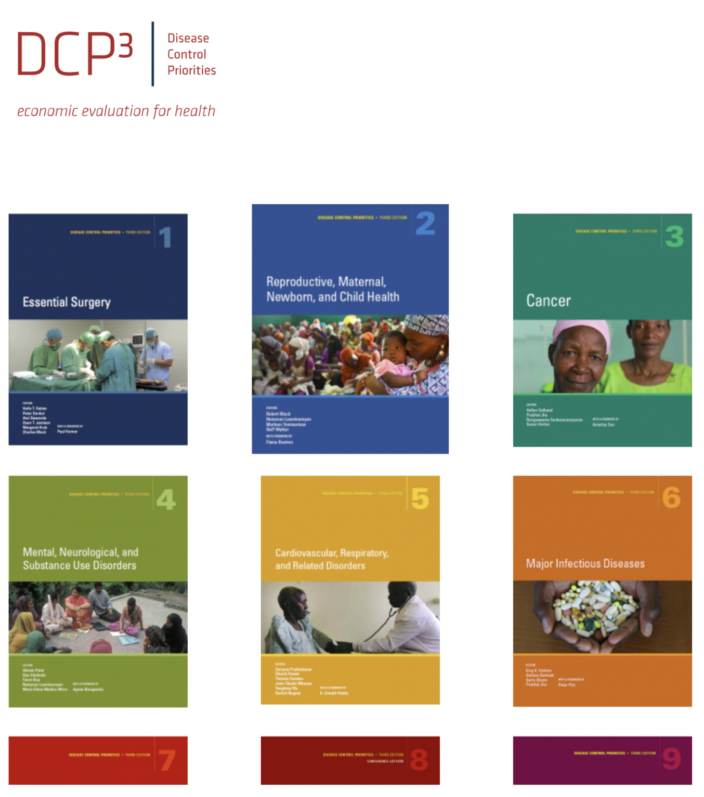
Adjustments needed for Valuing Costs
01
Inflation adjustment
02
Adjusting for currency and currency year
03
Discounting
Inflation Adjustment
Inflation Adjustment: Motivation
The Problem
$100 in 2000 is not equivalent to $100 in 2020
$100 could buy a lot more in 2000!
The Solution
Important to adjust for the price difference over time, especially when working with cost sources from multiple years
Inflation Adjustment: Example
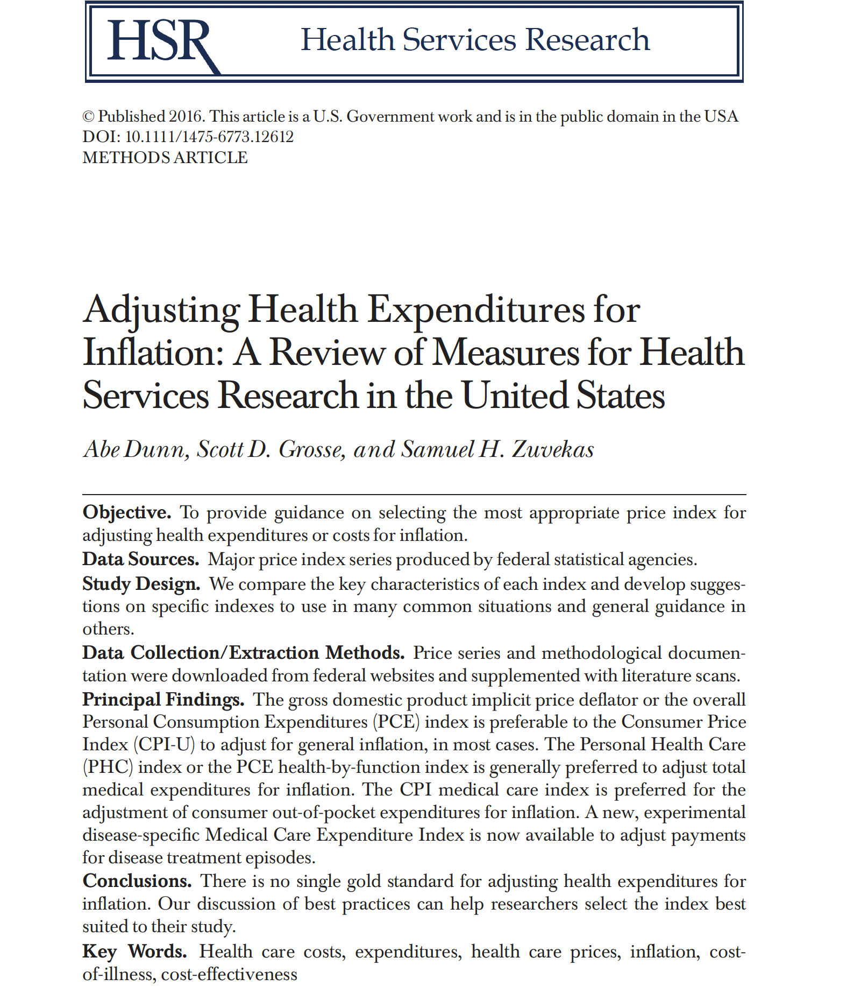
Inflation Adjustment: Method
1
Choose Reference Year
Usually the current year of analysis
2
Convert All Costs
Convert to reference year
3
Apply Formula
Use price index ratio
Converting cost in Year X to Year Y (reference year):
\textbf{Cost(Year Y)} = \textbf{Cost(Year X)} \times \frac{\textbf{Price index(Year Y)}}{\textbf{Price index(Year X)}}
Inflation Adjustment: Example
Example Problem
Cost of hospitalization for mild stroke in the US was ~$15,000 USD in 2016. Convert to 2020 USD.
Solution:
- PCE (Personal Consumption Expenditure Health Price Index) in 2016: 105.430
- PCE in 2020: 112.978
\textbf{Cost(2020)} = 15,000 \times \frac{112.978}{105.430} = \$16,674 \text{ (2020 USD)}
Currency Conversion
Currency Conversion Basics
When Needed
Not required for CEA but may be useful:
- Convert local currency to USD for international comparisons
- Cost-effectiveness thresholds often estimated in USD per DALY
How to Convert
Example: 1,000 Philippine Peso to USD
- Current exchange rate (2026): 1 Philippine Peso = ~0.017 USD
- Result: 1,000 Peso = $16.87 USD
Discounting
Why Discounting?
Purpose
Adjust costs at social discount rate to reflect social “rate of time preference”
Reasons
- Pure time preference (“impatient”)
- Potential catastrophic risk in the future
- Economic growth/return on investment
Discounting
A $ today is NOT worth a $ tomorrow
$100 now
2% net return
$102 next year
The “present value” of $102 next year is $100 today.
Similarly, $100 next year = $98.04 today
Inflation vs. Discounting
Inflation Adjustment
We convert PAST costs to present-day values
Discounting
We convert FUTURE costs to present-day values
Present Value Formula
PV = \frac{FV}{(1+r)^t}
Where:
FV = future value, the nominal cost incurred in the future
r = annual discount rate (analogous to interest rate)
t = number of years in future when cost is incurred
Standard rate: Reasonable consensus around 3% per year (may vary by country guidelines)
Important! Adjust for inflation and currency first, then discount
Intuition
r = 0.03
PV = FV/(1+r)^t, and we’re at Year 0:
| Year | Formula | Value of $1 |
|---|---|---|
| 0 | $1/1.03^0 | $1 |
| 1 | $1/1.03^1 | $0.97 |
| 2 | $1/1.03^2 | $0.94 |
| 3 | $1/1.03^3 | $0.92 |
What would $1 be in Year 2 be in the PRESENT VALUE of today?
Today, it will be 0.94.
Discounting Example
Example Problem
Assume in year 5, a patient develops disease, and there is a treatment cost of $500. What is the present value?
Solution:
PV = \frac{FV}{(1+r)^t} = \frac{500}{(1+0.03)^5} = \$431.30
Key Takeaways
Costs
- Different types of economic evaluation
- CEA uses cost-effectiveness ratios
- Perspective matters for cost inclusion
- Adjust for inflation & discount future costs
Questions?
Next Lecture: Benefits & QALYs